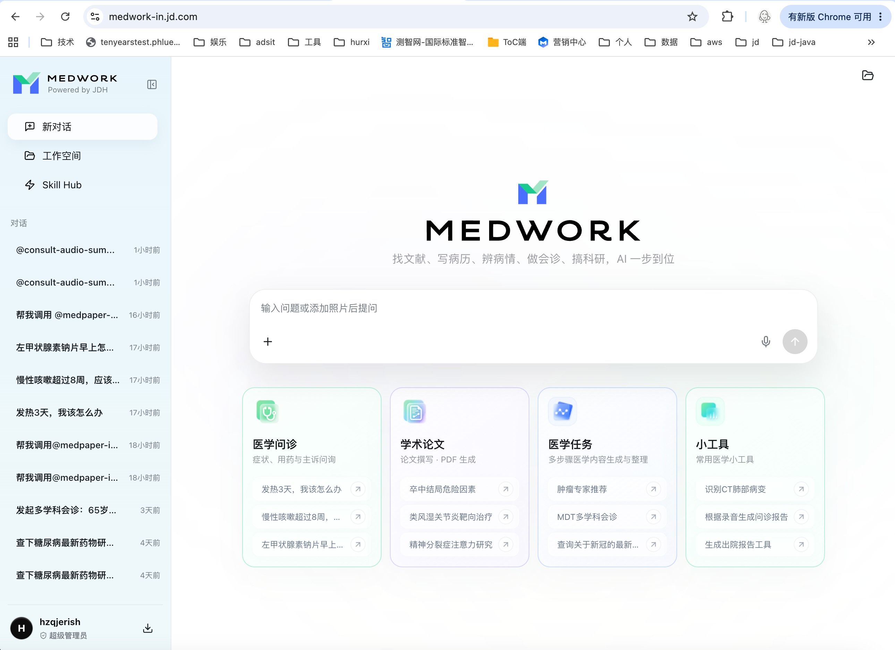
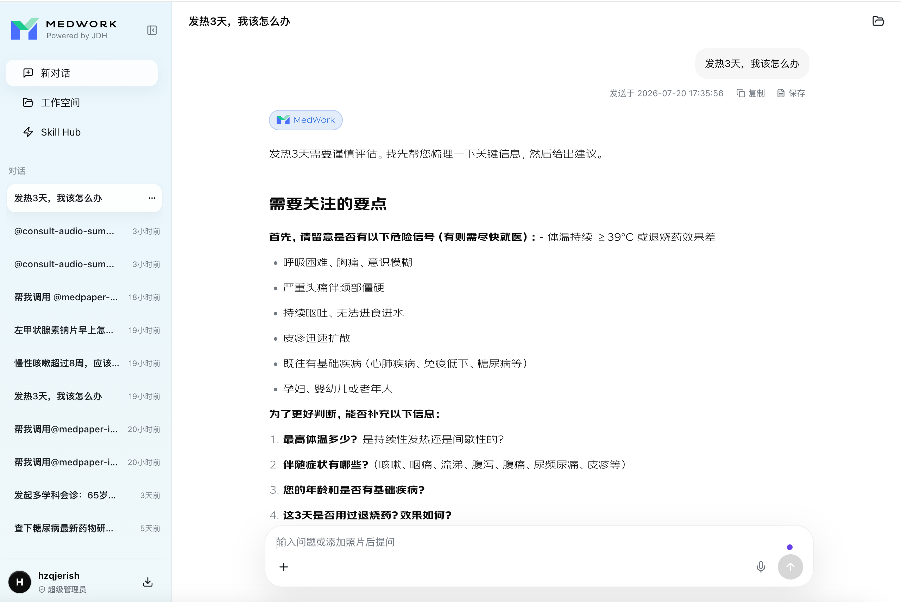
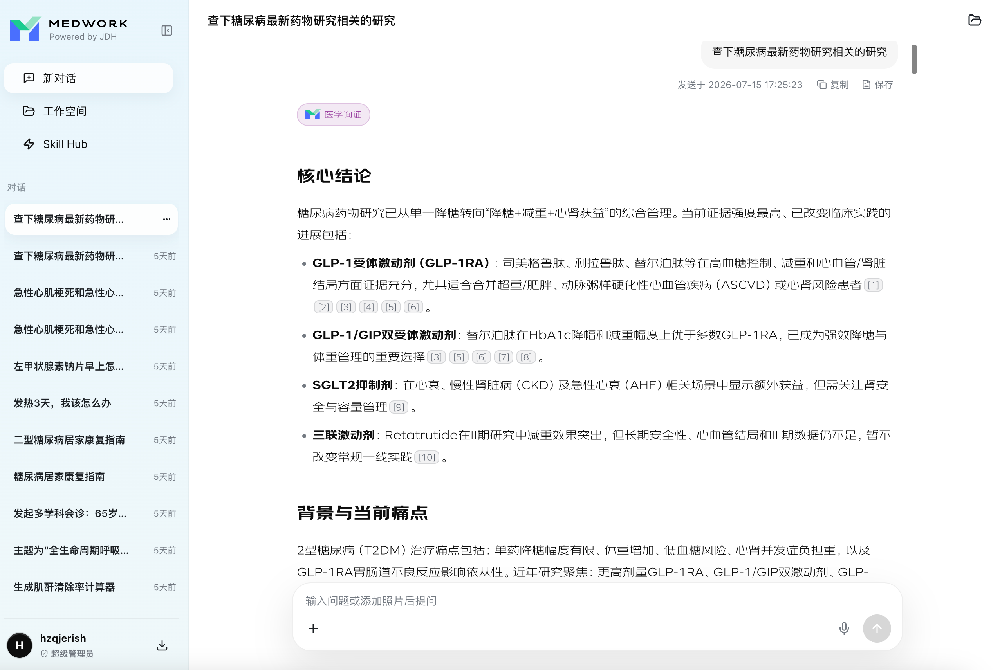
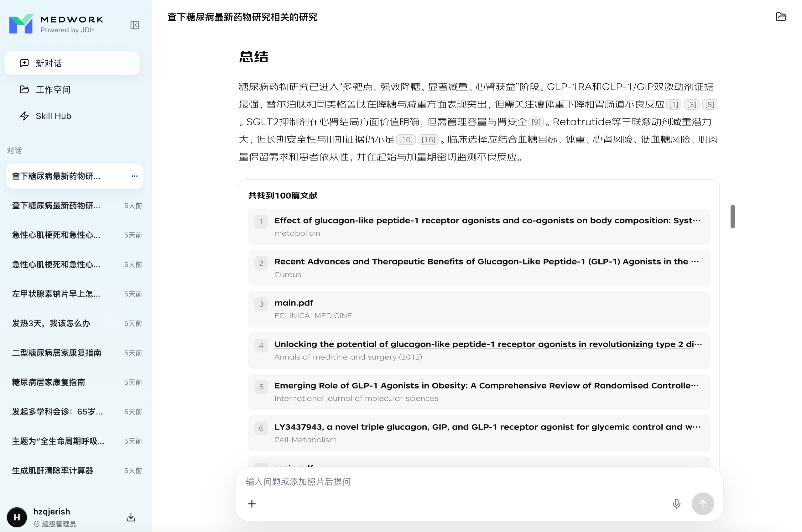
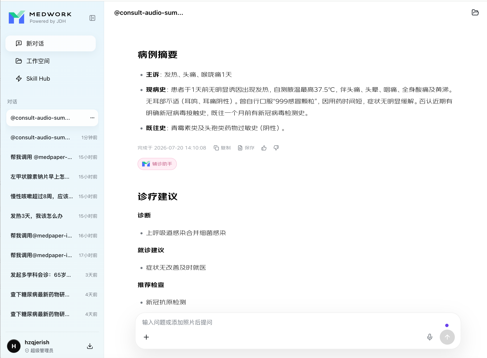

MedWork
智能平台
医疗人员的个人智能工作台 · 产品介绍
京东健康 · 2026
MedWork 是什么
医疗版 Codex —— 医疗人员的个人工作台
面向医疗人员的
个人智能工作台
，覆盖
PC 端 · 手机端 · 桌面端
可完成
复杂医疗任务
，而非单轮问答
可私有化 · 可商业化
部署
医疗版的 Codex / Openclaw
MedWork 智能平台
02
底层能力
权威知识底座 × 顶级医院专病共建
4000w+
医学文献
4w+
权威指南
2w+
药品说明书
50+
临床 / 科研常见医学任务
专病共建矩阵
临床营养 · 温附一 / 国家营养实验室
呼吸专病 · 广州呼吸研究院
消化道肿瘤 · 北京大学肿瘤医院
泌尿肿瘤 · 中山大学孙逸仙医院
心理专科 · 北京安定医院
乳腺肿瘤 · 江苏省人民医院
更多合作进行中…
MedBench 文本 & 多模态榜单 Top1
MedWork 智能平台
03
MedWork 的产品结构
四层结构：入口 · 交互 · 能力 · 空间
首页
：统一入口与任务推荐
主对话
：医生与平台进行自然语言交互
SkillHub
：承载循证、病历处理、MDT、科研等具体医疗能力
工作空间
：每个用户拥有独立的工作空间

MedWork 智能平台
04
医疗能力 · 医学问答
疾病 / 用药 / 检查 / 指南解读的智能问答
功能介绍
提供疾病、症状、用药、检查、指南解读等医学问题的智能问答服务，提升医学信息获取效率。
功能要点
输入
：文本、图片等常见患者状态信息（可接受图片类）
输出
：结构化医学回答 —— 核心结论、解释说明、风险提示、参考依据、下一步建议
应用场景
常规基础单轮问答，最基础的能力。

MedWork 智能平台
05
医疗能力 · 循证检索
从指南 / 共识 / 说明书 / 文献快速取证
功能介绍
面向临床决策，从指南、共识、药品说明书、医学文献等来源快速检索证据，并对
证据等级、适用人群、推荐强度
归纳总结。
功能要点
输入
：临床问题或 PICO 问题
输出
：检索结果摘要、核心证据结论、推荐意见、证据来源
应用场景
文献检索、诊断等对循证来源有较高要求的场景。


MedWork 智能平台
06
医疗能力 · AI-MDT
多学科 AI 智能体自动会诊
功能介绍
AI 自动分析病情，发起
多学科 AI 智能体
讨论并总结，生成最终会诊建议。
输入
：病历资料（基本病情、影像 / 病理结论、检验结果、既往治疗经过等）
输出
：标准化病例摘要、待讨论关键问题、分学科建议、会诊结论草案
支持
会前准备 · 会中记录 · 会后沉淀
，形成可复用 MDT 模板
应用：院内会诊前 AI 提供第二建议（
广附一落地中
）
MedWork 智能平台
07
医疗能力 · 病历书写
自然对话音频 → 结构化病情 + 辅诊建议
功能介绍
通过医患自然对话音频整理病情资料，并出具初步诊疗建议。
输入
：诊室录制的医患自然对话（音频记录）
输出
：患者病情结构化数据 + AI 基础诊疗建议
场景：门诊实时病情整理＆辅诊（
广附一落地中
）、互联网问诊实时 / 事后整理

MedWork 智能平台
08
科研能力 · 论文写作
选题 → 综述 → 设计 → 数据 → 成稿一站式
功能介绍
提供医学论文选题、文献综述、研究设计、数据解读、论文写作的一站式服务，提升科研效率。
输入
：研究方向、疾病领域、关键词、研究数据、投稿目标期刊
输出
：论文 PDF 及过程数据
场景：有数据的科研数据分析与论文写作
MedWork 智能平台
09
更多功能全景
院内服务 · 一站式科研闭环
📋 医疗服务
循证检索
AI-MDT
病历文书
临床辅助决策
院后处置与风险识别
用药助手 · 营养治疗
影像解读 · 临床计算器
相似病历检索 · 诊断分析
📚 科研服务
领域跟踪
选题研究方案
数据清洗
统计分析
图表制作
论文撰写 · 综述撰写
模拟审稿 · 审稿回复
真实世界研究
🎯 数据服务
病历数据提取
病历汇总
科研数据提取
🛠️ 办公场景
PPT 制作
汇报材料
Excel 表格处理
MedWork 智能平台
10
欢迎使用
立即体验 MedWork
PC 访问
medwork.jd.com
手机扫一扫 →
体验产品
MedWork 智能平台
11
← → / 空格 翻页 · F 全屏